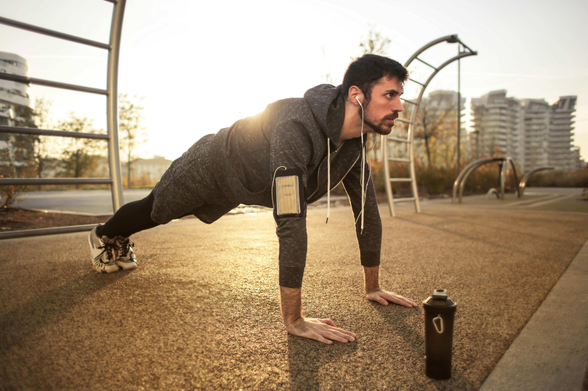

🏃♂️ Morning Fitness Routine to Boost Your Day
Starting your day with a fitness routine can completely transform your energy, mood, and productivity. Even 20-30 minutes in the morning can make a big difference. Here's a full breakdown of a simple and effective morning routine you can start today — no gym required!
🌅 Why Mornings Matter
Exercising in the morning jumpstarts your metabolism, helps burn fat faster, and releases endorphins which improve mood. It's a habit followed by many successful people across the globe.
🧍♂️ Warm-Up (5 minutes)
- Neck rolls – 1 minute
- Shoulder rotations – 1 minute
- Jumping jacks – 2 minutes
- Arm circles & leg swings – 1 minute
🔥 Main Workout (15 minutes)
Repeat the following set 2–3 times:
- Bodyweight squats – 15 reps
- Push-ups – 10–12 reps
- Plank – 30 seconds
- Lunges – 10 reps per leg
- Mountain climbers – 30 seconds
🧘♀️ Cool Down (5–10 minutes)
End your workout with light stretching, deep breathing, and a moment of mindfulness. Focus on your breath and thank yourself for showing up.
🍽️ Post-Workout Tips
- Drink a glass of water immediately after.
- Have a protein-rich breakfast (like eggs, oats, or smoothie).
- Track your progress using a fitness journal or app.
This 25-minute morning routine is enough to start seeing real benefits in just a few weeks. Make it a habit, and watch how your energy and confidence grow each day!